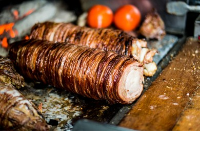
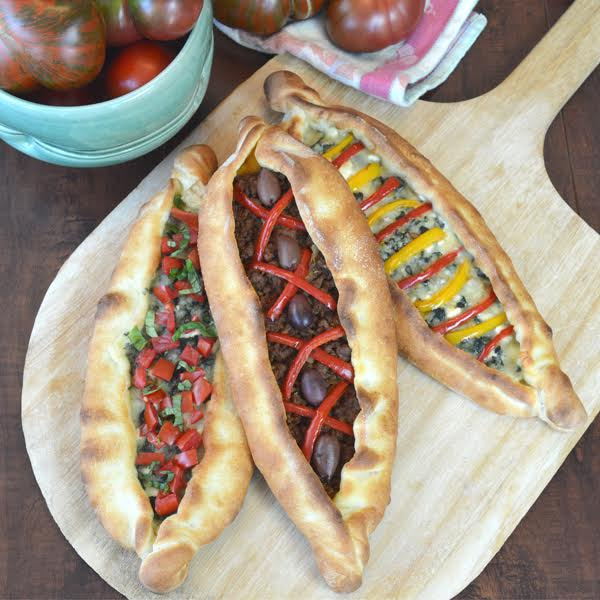
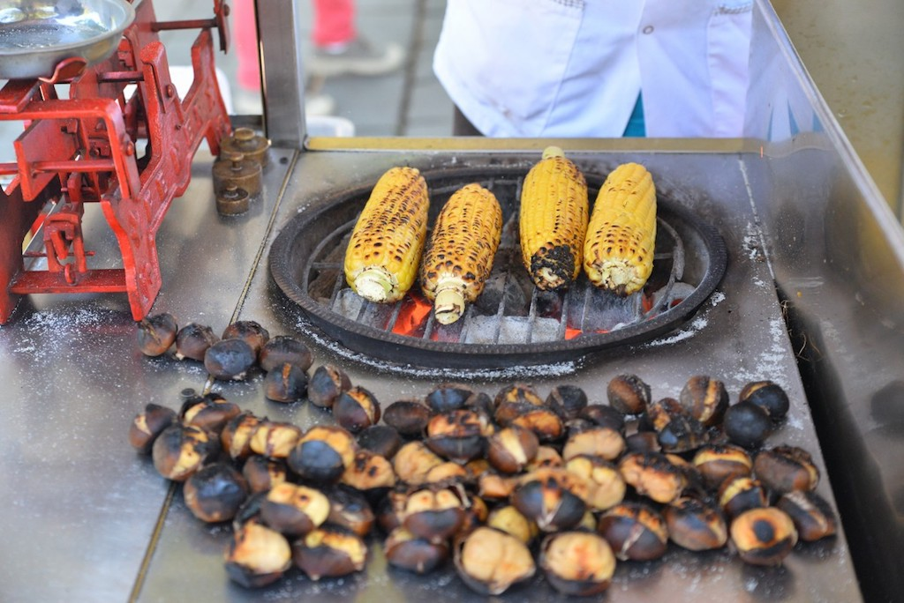
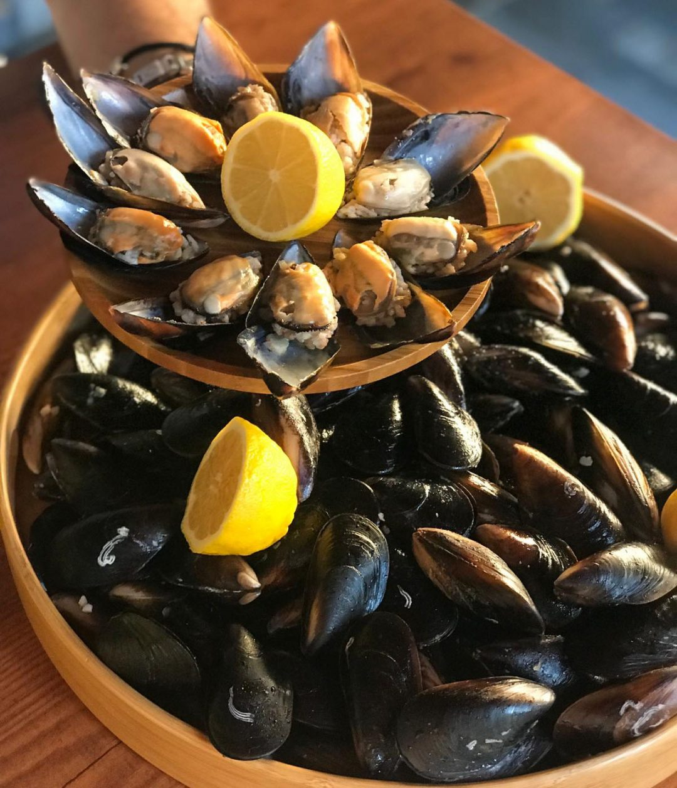
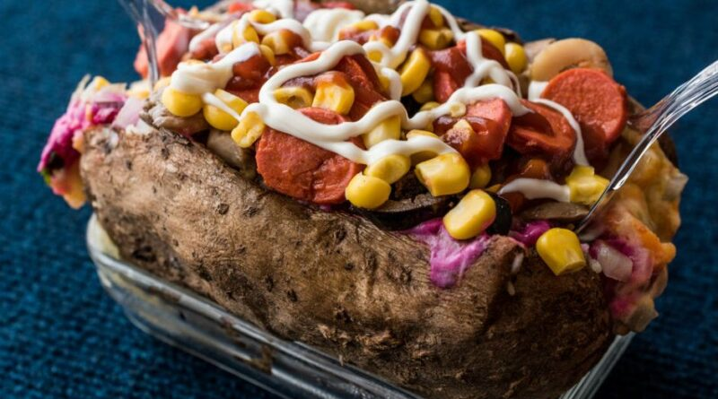
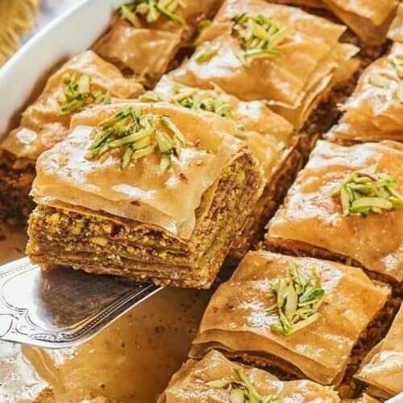
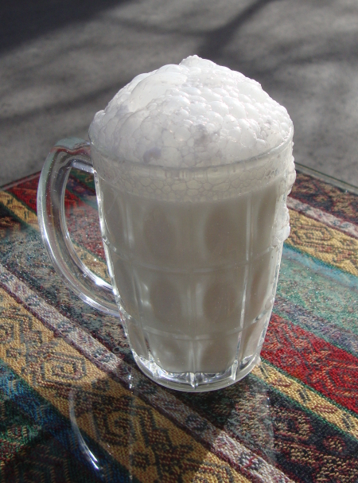
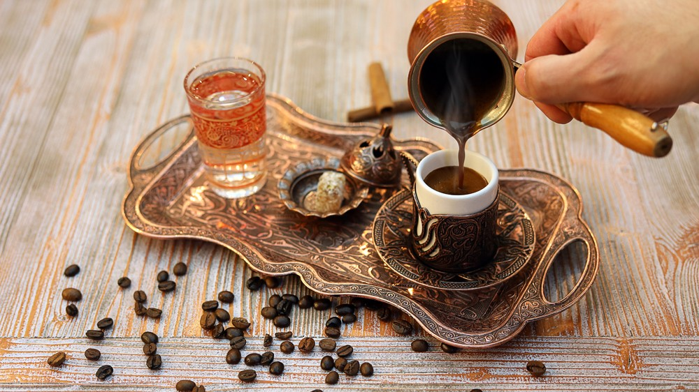

Kokoreç is a scrumptious meal which is made from lamb, bread and small intestine.The meat is then wrapped onto an iron skewer and then placed over a charcoal grill to fully cook. It's served with bread or on a plate with all sorts of spices and seasonings

Pide is (Turkish flatbread) a flat bread baked in a stone or clay oven with toppings. Pide and its numerous varieties are widely consumed in Turkey and have developed themselves as a staple meal. The foundation is a flatbread that looks like a pita, chapati, or a some may say pizza crust.

Turkish misir is corn on the cob that has been gently steamed before being lightly grilled or simply cooked, it is topped with salt, pepper, and other spices. Similarly the chestnuts are boiled and then roasted to give them a delicious smokey flavour, similar to misir, roasted chestnuts are sold by street vendors.

These mussels are stuffed with rice and other delectable seasonings that are suitable for any time of day and can be purchased on almost every corner, they are also served above the head of a mussel hawker while relaxing by the seaside or at one of the many outdoor cafes.

Kumpir is a Turkish dish that consists of a baked potato filled with your choice of toppings such as butter, cheese, all sorts of vegetables and some fruits too.

Baklava is a layered flaky pastry dessert loaded with crushed nuts and either honey or syrup. It is one of Turkey's most famous sweet desserts. Many tourists often purchase boxes of these before travelling back to their country.

Ayran is a yogurt-based beverage common in the Middle East and Turkey. Ayran is made up primarily of yogurt, water, salt, and herbs like mint. It's often referred to as diluted yogurt, and it's most commonly served in the summer. In Turkey, Ayran can be traced back to about 1000 BCE. It's a deeply ingrained ethnic drink. It is sometimes referred to as Turkey's national beverage.

Turkish coffee is brewed very finely, resulting in a very pure product. While any bean can be used, Arabic beans are deemed the most suitable. Turkish coffee is made by crushing coffee beans throughly into a powder, adding sugar (can be consumed without sugar too), and boiling it. It is served at different events like weddings and celebrations.